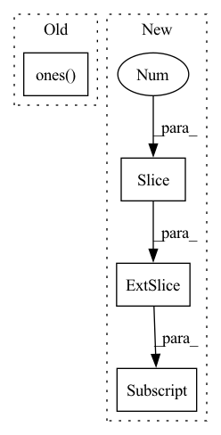

Pattern ID :16253
Before Change
def inverse_rotation_warp(img, rot, intrinsics, padding_mode="zeros"):
b, _, h, w = img.size()
cam_coords = pixel2cam(torch.ones( b, h, w) .type_as(
img), intrinsics.inverse()) // [B,3,H,W]
rot_mat = euler2mat(rot) // [B, 3, 3]After Change
world_points = depth_to_3d(torch.ones(B, 1, H, W).type_as(img), intrinsics) // B 3 H W
cam_points = torch.matmul(P, world_points.view(B, 3, -1))
pix_coords = cam_points[:, :2, :] / (cam_points[:, 2, :].unsqueeze(1) + 1e-7)
pix_coords = pix_coords.view(B, 2, H, W)
pix_coords = pix_coords.permute(0, 2, 3, 1)
pix_coords[..., 0] /= W - 1In pattern: SUPERPATTERN
Frequency: 3
Non-data size: 4
Instances Fragment ID: 54491195
Project Name: jiawangbian/sc_depth_pl
Commit Name: 6a50fb9e99035b26acd8d44a2965c6a5b8eaa4da
Time: 2022-08-18
Author: jiawang.bian@gmail.com
File Name: losses/inverse_warp.py
M Class Name: AnonimousClass
N Class Name: AnonimousClass
M Method Name: inverse_rotation_warp(4)
N Method Name: inverse_rotation_warp(4)
M Parent Class:
N Parent Class:
M File Name: losses/inverse_warp.py
N File Name: losses/inverse_warp.py
M Start Line: 275
M End Line: 284
N Start Line: 129
N End Line: 140
Before Change
Outputs: whole coordinates of shape (batch, L, n_atoms, 3)
batch, length = backbones.shape[0], backbones.shape[1] // 3
new_coords = torch.ones( batch, length, NUM_COORDS_PER_RES, 3, device=backbones.device) * padding
new_coords[:, :, :3] = rearrange(backbones, "b (l back) d -> b l back d", l=length)
// set the rest of positions to c_alpha
new_coords[:, :, 3:] = repeat(new_coords[:, :, 2], "b l d -> b l scn d", scn=11)After Change
new_coords = torch.zeros(batch, length, NUM_COORDS_PER_RES, 3).to(device)
predicted = rearrange(backbones, "b (l back) d -> b l back d", l=length)
// set backbone positions
new_coords[:, :, :3] = predicted[:, :, :3]
// set rest of positions to c_alpha
new_coords[:, :, 3:] = repeat(new_coords[:, :, 1], "b l d -> b l scn d", scn=11)
new_coords[torch.logical_not(cloud_mask)] = 0.
// overwrite cbeta Fragment ID: 54491190
Project Name: lucidrains/alphafold2
Commit Name: 3fbddf2be348b349186c787bbf30d1da2f2cd541
Time: 2021-03-03
Author: ericalcaide1@gmail.com
File Name: alphafold2_pytorch/utils.py
M Class Name: AnonimousClass
N Class Name: AnonimousClass
M Method Name: sidechain_container(6)
N Method Name: sidechain_container(4)
M Parent Class:
N Parent Class:
M File Name: alphafold2_pytorch/utils.py
N File Name: alphafold2_pytorch/utils.py
M Start Line: 244
M End Line: 246
N Start Line: 291
N End Line: 317
Before Change
flat = samples.view(-1)
print(_multinomial_prob(flat, torch.ones( 10) ))
// plt.hist(flat.int().numpy(), 10, density=True)
// plt.show()After Change
assert chi2_test(samples.view(-1), torch.ones(10) * 0.1)
logits = torch.rand(2, 10, 10000)
logits[:, :2, :] += 0.1
samples = sampling.GreedySampler()(logits)
assert not chi2_test(samples.view(-1), torch.ones(10) * 0.1)
assert chi2_test( Fragment ID: 54491189
Project Name: cheind/autoregressive
Commit Name: bd9eb01183a89771ea325551b59720b4f8ce0140
Time: 2021-11-11
Author: christoph.heindl@gmail.com
File Name: autoregressive/tests/test_sampling.py
M Class Name: AnonimousClass
N Class Name: AnonimousClass
M Method Name: test_greedy_sampler(0)
N Method Name: test_greedy_sampler(0)
M Parent Class:
N Parent Class:
M File Name: autoregressive/tests/test_sampling.py
N File Name: autoregressive/tests/test_sampling.py
M Start Line: 48
M End Line: 50
N Start Line: 34
N End Line: 46